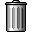
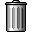

The tree should provide most functionality requested by apps.
Read the description about it.
Also, if something does not work, please read it before reporting.
-
You can drag'n'drop a node to change parent
- FirstTree accepts only sources from secondTree, secondTree accepts both (for demo purposes)
- You can only drop to folder ("+/-" sign)
- You can't drop an ancestor to any of its descenants
- You can't drop a child to its closest parent
- A node is highlighted if you can drop onto it
-
Move nodes up and down, remove them by selecting and pressing tool buttons.
You surely can't move top nodes higher and bottom nodes lower.
-
You can create nodes by clicking create button.
- Currently only simple same nodes are created, but this can be changed easily.
- Nodes are created on top for convinience.
- All editing operations use server requests(ajax)
- Empty folders get loaded dynamically.
- In this demo "test" node can be expanded infinitely (from server).
- Remote communication process is indicated.
- FirstTree has context menu (right-click on node), attached using events.
Its main functionality inherits dojo.widget.PopupMenu2.
-
A bunch of events is fired by both tree and controller to simplify integration.
-
Yes, it is OpenSource, and yes, you are free to use & contribute to it.
Ilia Kantor, ilia at manual dot ru
 
